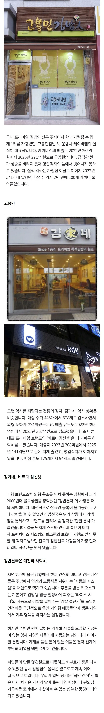
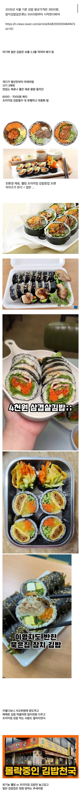

김밥 가끔씩 직접 해먹는데 토 나옴
밥 씻어서 밥 하고, 대야에 옮겨서 소금 참기름 참깨 넣고 비벼서
김밥김 굽고
계란 까서, 휘저어서, 계란 지단 부치고
당근 씻어서 채썰어서 볶고
어묵 데쳐서 잘라서 간장이랑 고춧가루 아주 살짝 넣어서 볶고
시금치 씻고, 다듬어서, 데쳐서 볶고
햄이랑 맛살 살짝 굽고(구워 먹는게 더 맛있어서)
여기까지가 일반 김밥임
참치김밥 = 참치캔 까서 기름 버리고, 마요네즈랑 비비고
소고기 김밥 = 소고기 다진거 볶아서 간 맞추고
새우튀김, 돈까스 김밥 = 튀김 튀기고
추가 등등
김밥 말아서 잘라서 먹으면~~~~~~~~~
씨발 설거지가 산더미
참기름 때문에 기름기에, 볶고, 부치느라 가스렌지 주변도 닦아야 하고, 김가루 날린 거 청소하고
밥솥, 대야, 냄비, 후라이팬, 도마, 칼, 숟가락, 젓가락, 그릇 등등
시금치랑 당근에서 흙 나왔으니 싱크대도 닦아야 하고
새우튀김이나 돈까스 김밥 했으면 기름도 버려야 함
김밥 재료가 보통 10줄 단위니깐 나중에 다 먹으면 김밥 재료 나눠서 담았던 락앤락 통만 4~5개씩 나옴
그래서 방법은 뭐냐? 엄마 불러야지.... 응애 엄마 김밥 해 줘 ㅠㅠ
김밥 마는 거랑, 설거지랑 청소만 내가 함
진짜 노동력 그 자체임.
어릴 때 소풍 갈 때 마다 엄마가 저녁부터 미리 재료 준비해놓고, 아침 일찍 일어나셔서 해주셨는지...
나중에는 왜 그냥 간단하게 유부초밥이나 돈 주시면서 사먹으라 하셨는지 이해가 가더라
직접 해보기 전에는 싫어 김밥 싸줘!!! 했는데
외식업은 인건비가 직빵이고 최저임금 올리면 외식물가 고대로 반영됨 피보는건 서민들이고
ㄹㅇ 최저올리면 공무원이랑 최저받는애들만좋지
뭐가좋다고 최저최저거리는지모르겠음 ㅋㅋㅋ
최저 받는 계층도 일자리 줄어서 ㅈ되고 공무원은 물가상승 막는다고 임금 동결 쳐서 ㅈ됨 급격한 최저임금상승은 그냥 다 ㅈ됨
중딩 때 학교 매점에서 500원에 파는 단무지 1줄에 시금치 1줄기 들어간 김밥이 그렇게 맛있었는데.. 추억이다.
비빔밥이 1500원이었음.
배도 안부른 1줄 5천원짜리 먹느니 몇천원 더내고 한식뷔페에서 먹는게 더 나음
댓글만 봐도 못올리는 이유가..
재료비 인건비 오른건 고려사항도 아니고
아무튼 김밥은 싸야한다는놈들이 트럭이라..
근데 그게 한식의 운명이기도하고 그래서 착잡하네
사먹는 김밥 특유의 맛이 있는데
아직도... 내마음속 김밥 마지노선은 2500원인걸...
그치.. 밥에.김에 각종 속재료 들어가도 4천원하면 비싸가 하는데
아메리카도 글라인더로 갈아서 한번내리로 물타면 4천원 ㅋㅋ
우리동네는 아직도 일반김밥이 4500원하는데
국밥을사먹고말지
저기있는데서 먹고 이물질 나옴 개 씨발 ㅡㅡ 그래서 식약처어플 내손안 어쩌고로 신고함 존나 빡치네
김밥 2줄까지는.어떻게 먹어도 사실 3줄은 힘들덬데..